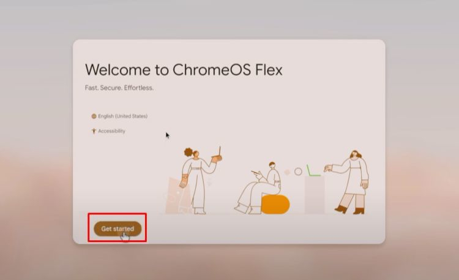

Image attribution: Free Malaysia Today website
Intended audience
ChromeOS Flex is intended as a replacement operating system for x86_64 PCs, where it will occupy the entire disk.
For this reason, be aware that by installing ChromeOS Flex on your PC, your computer's disk will be wiped clean, with whatever operating system and/or data on there being completely lost.
Prerequisites
Google has published a Certified Models List which outlines the desktop and laptop PCs that are certified to run ChromeOS Flex. The list also shows when the device started being supported, and for how long it will be officially supported (the End of support date ... usually 10 years after the model was first announced).
Before going further with this guide, please review the Certified Models List to make sure that your computer is listed/supported ... if you can't find your model on the list, double-check that you have the correct model name/number, as follows:
Windows
Newer versions of Windows include the msinfo32 utility:
- Right-click the Start button and select Run ...
- In the Run dialog, type msinfo32 and press Enter
System Information will start in the System Summary section.
Note where it says System Model in the following example:
Linux
To find your computer model, type the following command into your terminal:
sudo dmidecode | grep "Product Name"Sample output for the same machine shown under Windows:
Product Name: Latitude 5521 Product Name: 07V9JV
If this does not provide any useful output, repeat the command without piping dmidecode to grep.
USB Flash Drive
To create the ChromeOS Flex bootable installer, you'll need a spare USB stick (preferably USB3) with at least 16 GB capacity. Note that (like the computer disk) this will be completely wiped during the boot disk/installer creation process.
Whichever operating system you use to create the USB installer, the downloaded .zip file and the extracted .bin image file (combined) require 10 GB of free disk space ... for Windows and macOS, this means on your system drive ... on Linux, it's up to you where you download/extract these files.
Create the bootable installer
Time/space estimates:
Downloading | 2.0 minutes |
Verifying/unpacking | 0.5 minutes |
Writing to USB | 19.5 minutes |
Verifying USB | 4.0 minutes |
Total time | 26.0 minutes |
Free disk space | 10 GB |
The best way to create this bootable installer in Windows or macOS is with the Chromebook Recovery Utility extension for your Chrome browser ... normally this utility is used to create recovery USB thumb drives for specific Chromebooks, but it can also be used to create a ChromeOS Flex USB Installer with just a few clicks ... and the process is completely automated.
Prepare your recovery media by backing up any files you want to keep, because this process will wipe its entire contents during creation of the recovery disk.
Start by opening your Chrome browser, and going to the Chromebook Recovery Utility extension page in the Chrome Web Store ... alternatively, in the three-dot menu at top-right of Chrome, select Extensions | Visit Chrome Web Store and search for Chromebook Recovery Utility.
| Install the extension ... it's icon should match the one shown at left |

When you're ready, start the Chromebook Recovery Utility and click Get Started:
Click the Select a model from a list button
Click the Select a manufacturer drop-down list ...
and choose the Google ChromeOS Flex listing
Click the Select a product drop-down list ...
and choose the ChromeOS Flex listing
Click the Continue button when ready
Click the Select drop-down list ...
and choose your USB thumb drive from the list
Click the Create now button when ready
Windows will prompt you with a User Access Control dialog.
Click the Yes button to allowing writing the USB thumb drive:

The process will take at least 26 minutes, in 4 phases ...
Download, verify/unpack file, write USB, and verify USB:
That's it ... you're done!
Create the bootable installer
Time/space estimates:
Downloading | 3 minutes |
Verifying/unpacking | 1 minute |
Writing to USB | 23 minutes |
Verifying USB | 5 minutes |
Total time | 32 minutes |
Free disk space | 9 GB |
This method is for Linux users, and involves manually downloading/extracting the installer image, then writing the USB installer using the Balena Etcher utility (also requires download):
Start by downloading the latest ChromeOS Flex installer image:
dl.google.com OR ... | |
chromeos.exerra.xyz |
Version info (only relevant to Exerra.xyz):
- LTC = Long Term support Candidate
- LTS = Long Term Stable
- Stable = Regular version
Create a checksum file for .zip:
On the Exerra.xyz website, just above the Download button for each of the 3 versions of ChromeOS Flex, you'll see a drop-down arrow next to Hashes ... click the drop-down, then double-click the SHA1 hash number to highlight it ... now right-click the highlighted hash, and select Copy.
Start an empty plain-text file, and paste the hash into the file, followed by two spaces ... then paste the filename for the associated .zip file. Save the file in the corresponding filename.zip.sha1sum format ... for example: chromeos_16151.47.0_reven_recovery_stable-channel_mp-v7.bin.zip.sha1sum
Verify download (if applicable):
To verify the integrity of your downloaded .zip file, start by opening a terminal in (or cd into) the folder where you saved the .zip file.
Run this command to verify your download:
sha1sum -c *.sha1sumYou should eventually see some output similar to the following:
chromeos_16151.47.0_reven_recovery_stable-channel_mp-v7.bin.zip: OK
Unzip the .bin image file:
Unzip the downloaded .zip file to a temporary location ...
(the temp location will need to have at least 8 GB free)
Either use a GUI archive program, or run the following command:
unzip -d /tmp/ /path/to/downloaded.zip
Download Balena Etcher:
Go to https://etcher.balena.io/ to download the latest version ... you'll see a Download Etcher button at top center. Download the Etcher for Linux x64 (64-bit) (zip) version.
Unzip the file, then open a terminal window (or cd into) the balenaEtcher-linux-x64 folder.
To run the Balena Etcher executable, type this command:
./balena-etcherFollow these few steps to flash the image to USB:
- Click the Flash from file button in Balena Etcher
- Navigate to the folder where you unzipped the .bin image file
- Double-click the file to select it. Balena Etcher will open the file
- Now click the Select target button in Balena Etcher
- Check the little box next to your USB thumb drive, then click Select 1
- When you happy to proceed, click the Flash! button
This method will take approximately 28 minutes, assuming a USB3 stick.
Once the write process is complete, use lsblk to list the drive contents.
There should be 12 partitions in total, ranging in size from 2 MB to 5 GB.
When you are ready to install ChromeOS Flex on your computer, first double-check that you have a backup of any data that you wish to save, because remember, the drive will be wiped clean.
Insert the drive and boot from the USB thumb drive.
Once booted, there is little to no feedback for the first minute or so, except maybe your computer's fan spinning up. The entire boot sequence will take about 3 minutes, so please be patient.

Once the installer has fully loaded, you will see the familiar ChromeOS interface, with a big Get started button ... click Get started to go to the next screen, where you'll see the following options:
- Install ChromeOS Flex
Convert this device into a ChromeOS Flex device - Try it first
Keep your OS and run ChromeOS Flex from USB
To install ChromeOS Flex onto your computer, you will need to be at the login screen, i.e. if you did Try it first, you will need to log out first.
Follow the prompts ... it doesn't take long. When the installation is complete, shut down your PC, remove the USB thumb drive, then turn your computer on again.
If all went well, you should see the ChromeOS Flex logo during boot. You can then follow the wizard to complete the setup process, similar to setting up a new Chromebook
It is recommended that you keep your ChromeOS Flex installation USB for emergencies, but if you find that you no longer need it, then you'll need to remove all 12 partitions and reformat the device before it can be used again.
ChromeOS/Windows
To erase the installation USB, simply use the original Chromebook Recovery Utility that you used to create the installer.
Open your Chrome browser, and start the Chromebook Recovery Utility extension.
Click the gear icon at top-right, and select Erase recovery media from the menu:
Select the correct USB thumb drive from the drop-down menu:

Double-check that you have the correct drive before clicking Continue

Click the Erase now button to remove ChromeOS Flex from the drive:
That's it ... you can now format the USB thumb drive as you normally would.
Click the Done button to close the Chromebook Recovery Utility extension:

Advanced Windows
If you are comfortable using the command-line, then open the Windows Command Prompt or a Terminal window as Administrator, and run the diskpart command.
In diskpart, list all disks:
list diskIdentify your USB stick by size (probably 14.5 GB for a 16 GB stick), then select that disk:
select disk Xwhere X is the number next to your thumb drive
Once selected, list disks again to double-check:
list diskYour thumb drive should have an asterisk (*) in front of it
When you're sure that you have the correct disk, run the clean command:
cleanExit the diskpart utility:
exitYou can now format the disk with your preferred file system, as you normally would.
Linux
Start by identifying the correct device name:
lsblkYour drive should have the correct size shown, and 12 partitions as demonstrated earlier.
When you are happy that you have the correct device name, run the following command:
sudo dd if=/dev/zero of=/dev/sdX bs=512 count=1 conv=notrunc
where /dev/sdX is the USB drive's device name (replace X with actual letter).
Now in Gparted, you will need to create a partition table before creating a new partition
Official Links
Certified models list (Certified for ChromeOS Flex)
Differences between ChromeOS Flex and ChromeOS
Google's official ChromeOS Flex Installation Guide
Information about Long Term Support releases
Troubleshooting
Recover unreadable USB thumb drive
Sometimes, writing to a USB thumb drive might be interrupted, for whatever reason, and incomplete.
If this happens, then you might find that your operating system is no longer able to read the drive.
Rather than repeating the excellent information supplied by the makers of Balena Etcher, here is a link to their GitHub user documentation: Recovering broken drives